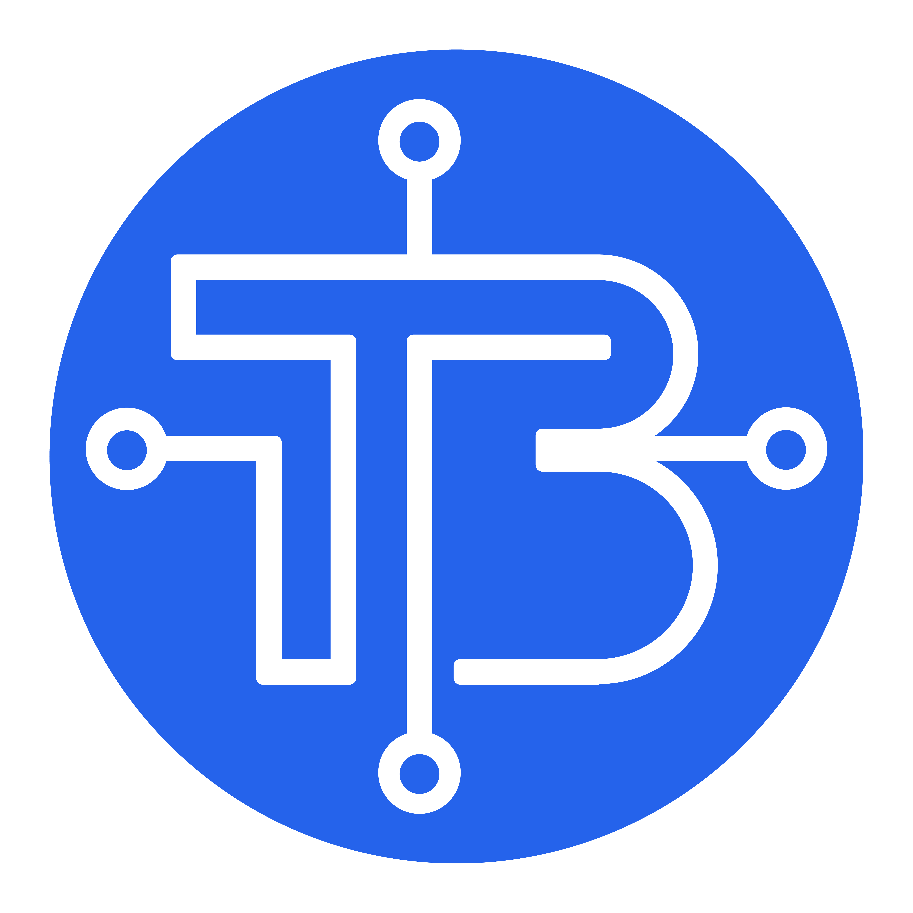

VCC
GND
IO 23
GND
IO 23
Electrónica
Circuitos, componentes, microcontroladores y prototipos que cobran vida.

TECNYBYTEMAKER LAB · MXLABORATORIO TECNOLÓGICO INDEPENDIENTE — 01 / 04
Electrónica, fabricación digital y desarrollo tecnológico. Ideas que salen del papel, se convierten en prototipos y terminan funcionando en el mundo real.
La abrimos, la entendemos, la modificamos y construimos algo nuevo.
TECNYBYTE es un espacio maker donde compartimos procesos reales de electrónica, programación, IoT e impresión 3D. Aprendemos experimentando y documentamos cada paso para que más personas se animen a crear.
CONOCE NUESTRA HISTORIA ↗[ 01 — NUESTRO UNIVERSO ]
Distintas disciplinas.
Una misma mentalidad: crear.
Circuitos, componentes, microcontroladores y prototipos que cobran vida.
Del diseño digital a piezas funcionales. Modelado, calibración y fabricación.
Dispositivos conectados, sensores, domótica y sistemas inteligentes.
Firmware, herramientas digitales y software para resolver problemas reales.
[ 02 — DEL BANCO DE TRABAJO ]
Cada proyecto empieza
con una pregunta.
PROTOTIPADO · MECATRÓNICA
Documentamos el proceso, los errores y los aprendizajes. Porque el resultado importa, pero entender cómo llegamos también.
VER TODOS LOS PROYECTOS EN YOUTUBE ↗[ 03 — TECNYBYTE EN YOUTUBE ]
Videos de proyectos, reparaciones, electrónica y experimentos. Acompáñanos del primer cable hasta el último tornillo.
SUSCRIBIRME AL CANAL ↗Entiende cómo funciona el inversor lógico y cómo transforma una señal.
No necesitas tenerlo todo resuelto para comenzar a construir.
TECNYBYTE nació de la curiosidad por entender cómo funcionan las cosas. Hoy es una plataforma para experimentar, documentar y compartir tecnología de una forma cercana, práctica y colaborativa.
SÍGUENOS EN INSTAGRAM ↗[ 05 — CONSTRUYAMOS JUNTOS ]
Comparte tus proyectos, síguenos y forma parte de una comunidad que aprende haciendo.